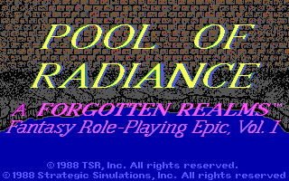
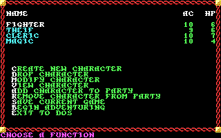
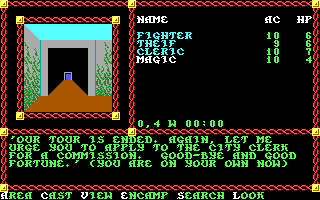
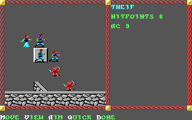

名稱：光芒之池／光輝之池 (Pool of Radiance，英文版)
簡介：SSI 1988年出品的角色扮演遊戲，台灣由智冠代理進口。遊戲以直角3D畫面呈現，
戰鬥時則以3D斜角畫面呈現，採策略團體回合制方式進行 [待補]。




備註：本版為1992年1.3版
保護：輪盤單字，破解碼：
GAME.OVR
75 02 EB 25 8D 7E BC 16 57 BF E4 00
90 90 -- -- -- -- -- -- -- -- -- --
檔案：poolrad10.rar = 1.0版（智冠版）
操作：Home/End = 上下移動選單